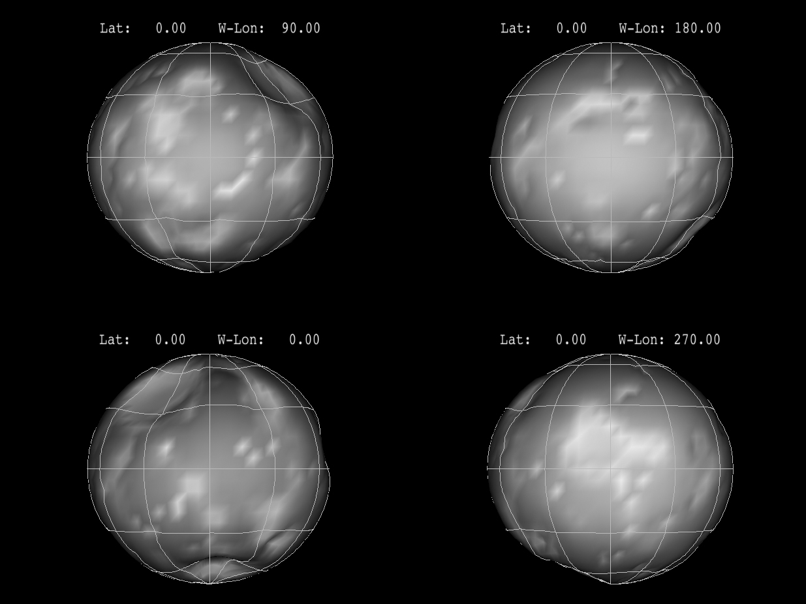
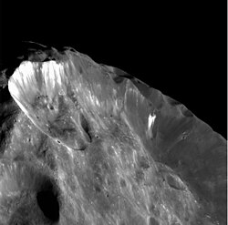

Phoebe as seen by the Cassini orbiter
Phoebe is a natural satellite of Saturn.
It is the largest of all the irregular satellites and is a member of the Norse group.
It was discovered in 1899 and is named after a Greek Titaness, like other major satellites of Saturn, before the naming convention for Norse satellites was established.
Phoebe is thought to be a captured centaur.
It is a dark, icy, and heavily cratered body that used to look much more like a regular planetary body.
It has been visited by the Cassini orbiter.
This visit has given insight on not just the moon itself, but also what other distant minor planets like the centaurs and the trans-Neptunian bodies might look like.
Phoebe was discovered in 1899 by astronomer William Pickering.
It was the first satellite to be discovered photographically, using photographic plates that had been taken starting the previous year at the Boyden Observatory near Arequipa, Peru, by DeLisle Stewart.
Phoebe is named after the Titaness in Greek mythology associated with the Moon, and is a sister of Cronus.
Many more moons have been discovered with similar orbits to Phoebe, refered to as the Norse group.
The new naming convention stated that these moons should be named after norse mythological figures, making Phoebe the only one not named after one.
Orbit and rotation
Phoebe has a semi-major axis of 12,929,400 km, orbiting Saturn every 550 Earth days, or roughly 18 months.
Phoebe is an irregular satellite, meaning it follows a highly eccentric and inclined orbit compared to the more circular inner orbits.
It has a retrograde orbit with an inclination of 151.78 and an eccentricity of 0.164.
Its retrograde orbit places it into the Norse group.
Phoebe rotates around its axis every 9.3 hours and has an axial tilt of 152.14°.
Along Phoebe's orbits is located the outernmost Saturn ring.
It is very sparse and extends from at least 128 to 207 times the radius of Saturn.
The debris rotates in the same retrograde motion as Phoebe and strike the inner moon Iapetus's leading hemisphere, making it darker in appearance.
The same material also ends up on the surface of Hyperion.

The approximate spheroid shape of Phoebe, distorted by several large craters
Size and shape
Phoebe is the ninth largest and the largest irregular satellite of Saturn with a mean 213 km radius.
It has a roughly spherical shape that is carved out by several large craters.
Phoebe is also the eight most massive moon of Saturn, ahead of the porous Hyperion.
Despite its small size, Phoebe is thought to have been a spherical body with a differentiated interior earlier in its history, before solidifying and losing its round shape.
With a density of 1.64 g/cm^3, that would mean it has a rocky core and an icy mantle.
Rocky material is estimated to be 50% of Phoebe's composition.
Original assumptions that it was originally a carbonaceous asteroids were thus disproven.
Instead, it was most likely a centaur - a type of distant minor planets that cross the orbits of the giant planets.

Rim of the large Jason crater
Phoebe has a low albedo unlike the regular inner moons.
Water and carbon dioxide, as well as possible organic compounds have been detected on the surface of Phoebe by both the Cassini orbiter and by the James Webb Space Telescope.
Features on the surface of Phoebe are mostly craters.
Many large impact basins have deformed the originally round moon, like the 101 km Jason, the 89 km Eurytus and the 61 km Idmon.
Phoebe was the first target encountered upon the arrival of the Cassini spacecraft in the Saturn system in 2004.
Cassini's trajectory to Saturn and time of arrival were specifically chosen to permit this flyby.
This makes it the only other irreguar moon to be visited by a spacecraft apart from Triton, although its only irregularity is the retrograde orbit and the slight inclination.
The Cassini visit has given insight on not just Phoebe itself, but also what other distant minor planets like the centaurs and the trans-Neptunian bodies might look like, as they are important for the understanding of how the Solar System has formed.
External links
{% include catnatural-satellites.html %}